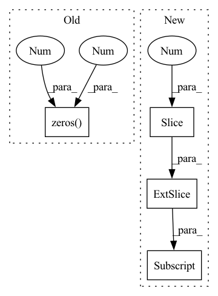

Pattern ID :20060
Before Change
// Dummy forward passes
// TODO: Use triple factory
model.forward_owa(torch.zeros(16, 3, dtype=torch.long))
model.forward_cwa(torch.zeros(16 , 2 , dtype=torch.long) )
model.forward_inverse_cwa(torch.zeros(16, 2, dtype=torch.long))
After Change
assert scores.shape == (batch_size, model.num_entities)
// Test forward_inverse_cwa
scores = model.forward_inverse_cwa(triples[:, 1:] )
// Check shape
assert scores.shape == (batch_size, model.num_entities)
In pattern: SUPERPATTERN
Frequency: 3
Non-data size: 4
Instances Fragment ID: 65730370
Project Name: pykeen/pykeen
Commit Name: 39314b14acab81d54f427d55e1d2a44eab096646
Time: 2019-07-25
Author: berrendorf@dbs.ifi.lmu.de
File Name: tests/test_models.py
M Class Name: TestModels
N Class Name: TestModels
M Method Name: test_simple(1)
N Method Name: test_simple(1)
M Parent Class: unittest.TestCase
N Parent Class: unittest.TestCase
M File Name: tests/test_models.py
N File Name: tests/test_models.py
M Start Line: 87
M End Line: 89
N Start Line: 87
N End Line: 104
Before Change
while not all_done.all():
actions = []
for i in range(n_agents):
action_agent = torch.zeros(25 , 2 )
actions.append(action_agent)
obs, rews, dones, _ = self.env.step(actions)
self.env.render()After Change
torch.stack([torch.cos(angle), torch.sin(angle)], dim=1)
* agent_dist_to_target
)
delta_pos = desired_pos - obs[i][:, :2]
action = torch.clamp(
delta_pos * 2,
min=-self.env.agents[i].u_range,
max=self.env.agents[i].u_range, Fragment ID: 65730362
Project Name: proroklab/vectorizedmultiagentsimulator
Commit Name: 92c9eee35eb9bce74fd3046ea1168aa2cbdcf77a
Time: 2022-07-05
Author: jb2270@cam.ac.uk
File Name: tests/test_scenarios/test_flocking.py
M Class Name: TestDispersion
N Class Name: TestDispersion
M Method Name: test_heuristic(1)
N Method Name: test_heuristic(1)
M Parent Class: unittest.TestCase
N Parent Class: unittest.TestCase
M File Name: tests/test_scenarios/test_flocking.py
N File Name: tests/test_scenarios/test_flocking.py
M Start Line: 29
M End Line: 53
N Start Line: 30
N End Line: 61
Before Change
// Dummy forward passes
// TODO: Use triple factory
rotate.forward_owa(torch.zeros(16 , 3 , dtype=torch.long) )
rotate.forward_cwa(torch.zeros(16, 2, dtype=torch.long))
rotate.forward_inverse_cwa(torch.zeros(16, 2, dtype=torch.long))
After Change
assert scores.max() <= 0.
// Test forward_cwa
scores = model.forward_cwa(triples[:, :2] )
// Check shape
assert scores.shape == (batch_size, model.num_entities)
// Scores are negative distance -> non-positive Fragment ID: 65730368
Project Name: pykeen/pykeen
Commit Name: c4281c7310b4636cc61976a60ce6a67c1f7ef297
Time: 2019-07-25
Author: berrendorf@dbs.ifi.lmu.de
File Name: tests/test_models.py
M Class Name: TestModels
N Class Name: TestModels
M Method Name: test_rotate(1)
N Method Name: test_rotate(1)
M Parent Class: unittest.TestCase
N Parent Class: unittest.TestCase
M File Name: tests/test_models.py
N File Name: tests/test_models.py
M Start Line: 67
M End Line: 74
N Start Line: 67
N End Line: 95